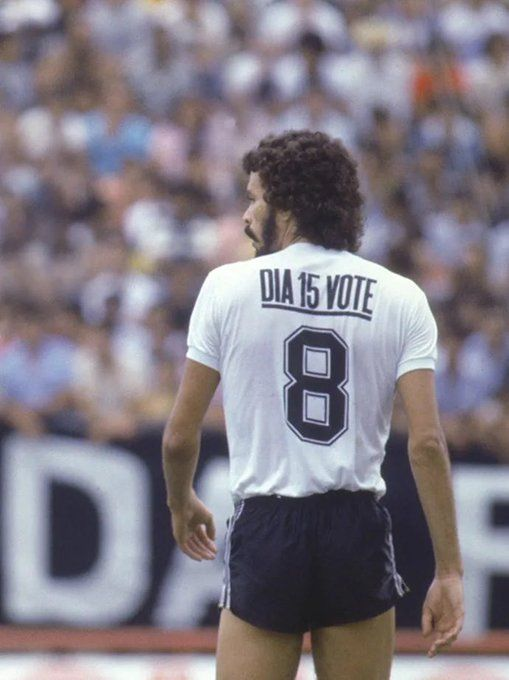
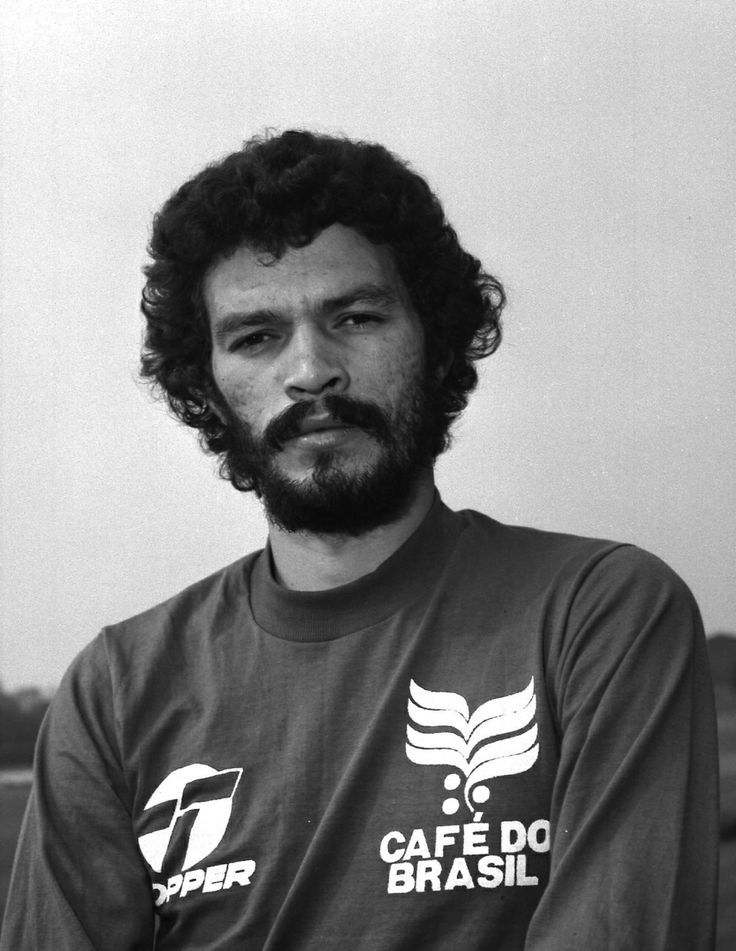
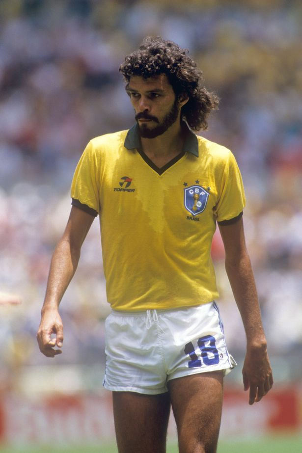

Sócrates Brasileiro Sampaio de Souza Vieira de Oliveira
Sócrates Brasileiro Sampaio de Souza Vieira de Oliveira, o "Doutor", foi um dos meio-campistas mais emblemáticos do futebol mundial, famoso pela elegância em campo, visão de jogo e o característico toque de calcanhar. Ídolo do Corinthians entre 1978 e 1984, conquistou três Campeonatos Paulistas, marcou mais de 170 gols e liderou a histórica Democracia Corinthiana, movimento que usou a autogestão no clube para combater a ditadura militar. Médico de formação e capitão da Seleção Brasileira na Copa de 1982, ele consolidou sua trajetória como um símbolo único de talento técnico, inteligência e engajamento político e social no esporte.
Entrevista com Sócrates | 1984
Provocações | Sócrates
Galeria de Fotos



- Campeão Paulista pelo Corinthians nos anos de 1979, 1982 e 1983.
- Liderança e idealização da Democracia Corinthiana, movimento divisor de águas no futebol e na política nacional.
- Capitão e protagonista da Seleção Brasileira na Copa do Mundo de 1982, considerada uma das equipes mais vistosas da história do futebol.
- Eleito Futebolista Sul-Americano do Ano em 1983 e incluído na lista FIFA 100 dos melhores jogadores vivos da história.
- Sócrates nasceu em 19 de fevereiro de 1954 em Belém, Pará, e recebeu esse nome porque seu pai era um leitor fervoroso de literatura e filosofia clássica
- Foi casado três vezes, teve seis filhos e era irmão do também ex-jogador Raí, ídolo do São Paulo e campeão mundial em 1994
- Ficou conhecido por executar pênaltis e passes sem dar impulso, usando apenas o calcanhar para surpreender os adversários e economizar desgaste físico
- Conciliou a rotina de atleta profissional no Botafogo-SP com a faculdade de Medicina na USP de Ribeirão Preto, formando-se médico enquanto já jogava futebol de alto nível